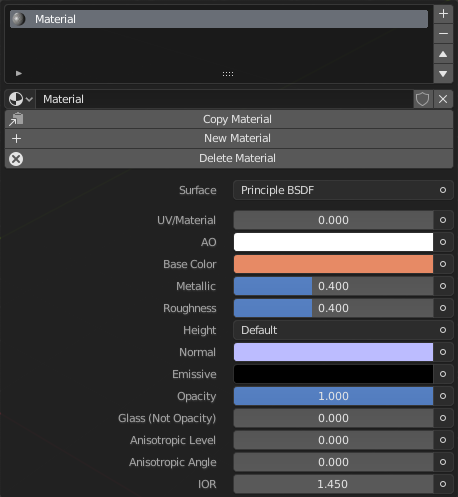

Materials Menu
Please note: In order to have the Substance Export (Export SBSFBX) function available, the Save/Open pie also needs to be enabled
Functions / Table Of Contents
- Materials Menu
- ID Map Menu
- Create Material Sets
- Create Texture Sets
- Clear Material Sets
- Assign
- Select
- Deselect
Materials Menu
Effectively mirroring what is seen in the properties panel, this menu contains all necessary options for the managing of materials on the selected object. The menu also handles editing the node tree of the selected material in the list.
Also see: Blender Manual
ID Map Menu
This menu's functions are designed for creating "ID Maps" with object vertex colors. The ID colors (vertex colors) are to be baked in Substance Painter. The conventional method for generating ID maps is to add emission shaders of random colors and baking the emission map in Blender. The method using these functions saves you the trouble of baking in Blender and creating multiple materials, although it is destructive to vertex colors.
Functions / Table Of Contents
- Create ID
- Link Vertex Colors
- Create Id Texture Set
- Id From Texture Sets
Create ID
Assigns a random vertex color to each object in the scene so an ID map can be baked in Substance Painter. All existing vertex colors will be overwritten.
Link Vertex Colors
The vertex color assigned to the active object will be copied and assigned to all other selected objects. Requires at least two mesh objects to be selected to work.
Create Id Texture Set
Assigns a random vertex color to all selected objects.
Id From Texture Sets
Objects with the same material will be assigned a random vertex color. This only applies to visible objects, hiding objects will preserve their vertex colors.
Also see: Blender ManualCreate Material Sets
Designed to be a batch material-add operation, this is best used when there is scene needing shaders on many objects. The function creates and assigns a unique material to each object in the scene. If enabled, the substance shader will be used as the main shader for the material.
Create Texture Sets
Creates an assigns a unique material to selected objects. This action should be repeated on different objects depending on how many texture sets you want to have in Substance Painter.
Clear Material Sets
Clears the first material slot on all objects in the scene, designed to counteract the Create Material Sets function.
Assign
Assign active material slot to selection. Also see: Blender Manual
Select
Select by active material slot. Also see: Blender Manual
Deselect
Deselect by active material slot. Also see: Blender Manual